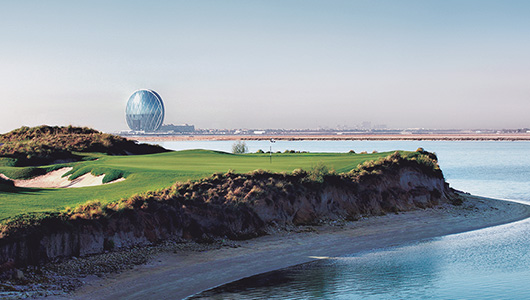
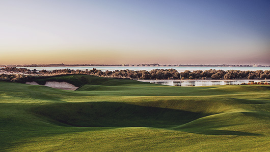

사막에서 즐기는 이색골프
2016 ‘World 100 Greatest Golf Course No. 46 [Golf Digest]
아랍에미리트 아부다비 야스 섬(Yas Island)에 자리 잡고 있는 야스 링크스(Yas Links) 골프 클럽은 코스 옆으로 흐르는 운하의 보석 같은 비취색의 물빛과 운하 너머로 펼쳐진 바다는 그보다 더 푸른색을 띠며 흰 백사장과 어울려 비췻빛과 푸른빛이 교차하는 모습은 예술에 가깝다는 찬사를 듣는 아랍 에미리트(UAE)최고의 18홀 력셔리 리조트 세미 프라이빗 골프 클럽이다.

2010년에 세계적인 골프 코스 설계자인 카일 필립스(Kyle Phillips의 디자인으로 조성 된 야스 섬 서쪽 해안에 자리 잡은 야스 링크스 골프 코스는 모든 홀에서 바다를 조망할 수 있으며 스코틀랜드 해안 마을 특유의 전통적인 링크 골프 코스의 표본을 잘 보여 주는 아부다비 최초의 링크 골프 코스이다. UAE 최고의 골프 코스이자 2년마다 세계 100대 골프 코스를 선정해서 발표하는 “골프 다이제스트지”에서 2016년에 발표한 전 세계 100대 골프 코스에서 46위에 선정된 세계적으로 뛰어난 코스이다.

코스뿐만 아니라 야스 링크 아부다비의 안달루시아식 클럽 하우스 테라스에서 바라보는 골프장은 가슴 탁 트이는 풍광을 자랑한다. 야스 링크 골프 클럽은 스포츠 라운지와 두 곳의 노천 테라스, 그리고 별도의 만찬 실을 갖춘 바랑카 레스토랑을 운영하고 있으며, 수영장과 사우나 및 숍 등의 편의시설을 갖추고 있어 더욱 편리하게 골프 여행을 즐길 수 있다.
Travel Tip
야스 섬은 레저 섬으로 알려져 있으며 야스링크스 코스 옆으로는 페라리 월드(Ferrari World)와 2009년부터 “F1 아부다비 그랑프리”가 열리는 마리나 트랙이 있고, 다섯 개의 호텔이 군락을 이룬 첨단 레저의 지역이다. 야스링크스 골프 클럽의 부대 시설로는 파3 9홀 아카데미 코스가 있고, 스페인풍의 3층 클럽하우스 뒤로는 풀장이 있어 유럽의 많은 골퍼가 즐겨 찾는 곳이다.